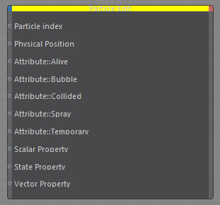

Particle Edit

Allows to access and change any particle properties.
Use the Particle Info node to retrieve the particle count and feed it into a usual Xpresso iterator.
The iterator's output can then be linked to Particle Edit to browse all (desired) particles.